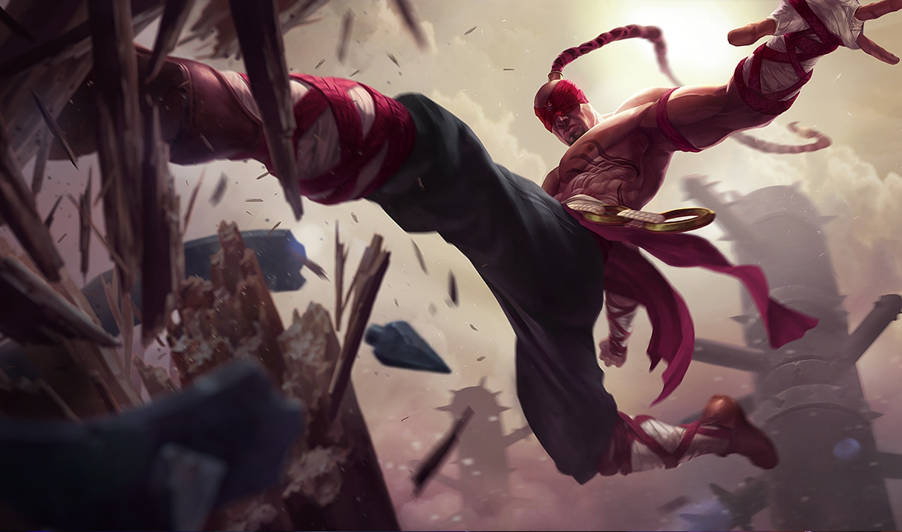

God Tier actual de LOL, el meta.
Desastre en el nuevo meta.
El nuevo meta dejo con mal sabor de boca a muchos, en especial a los main adc, los cuales quedaron en el olvido por bastante tiempo
Poco a poco el meta ha ido regresando a la "normalidad", asi nuestros amigos adc podran aportar a las batallas de la grieta. Aunque si ven una Nami salvaje en early, sera mejor que corra por su vida.
| Champ | WIN rate | Play rate |
| 55.23% | 6.5% | |
 |
55.14% | 7.5% |
| 52.89% | 5.6% | |
|  | 55.53% | 10.38% |
 |
50.99% | 14.57% |